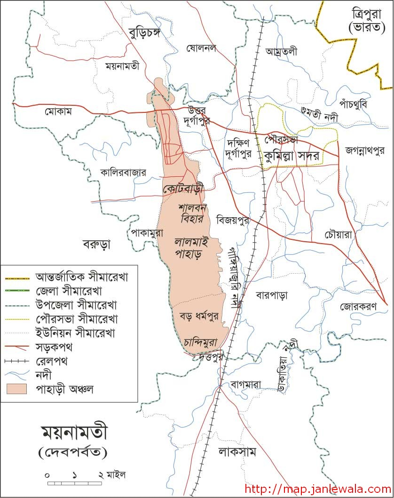
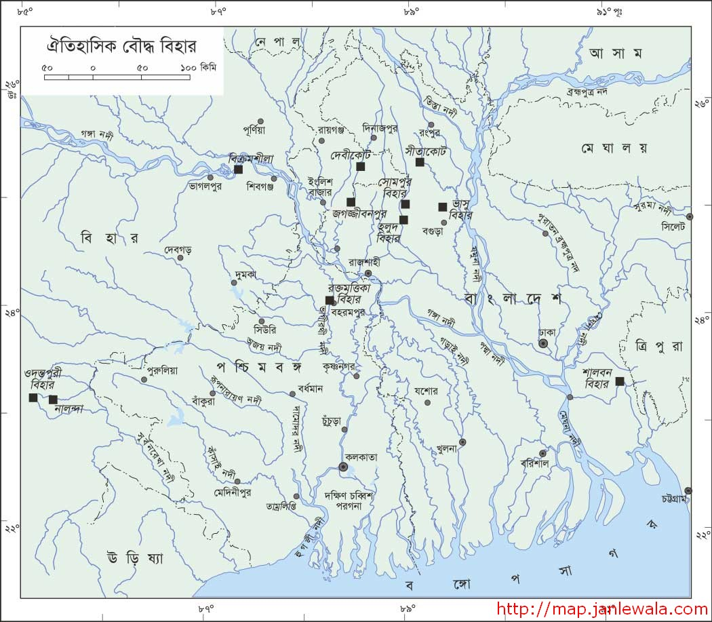
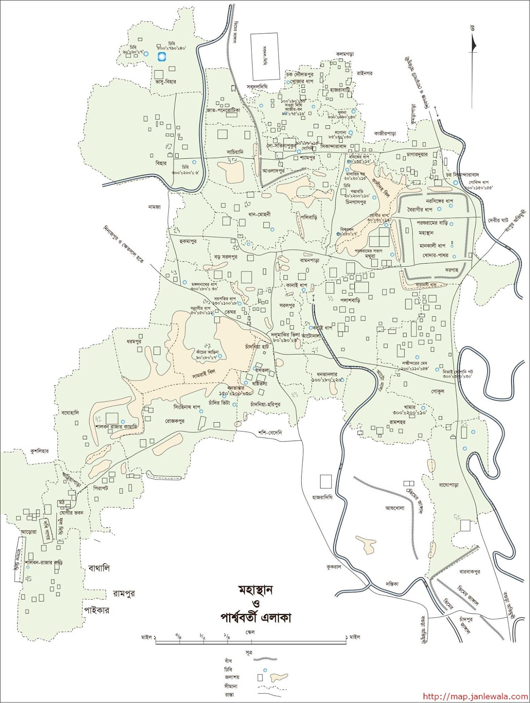
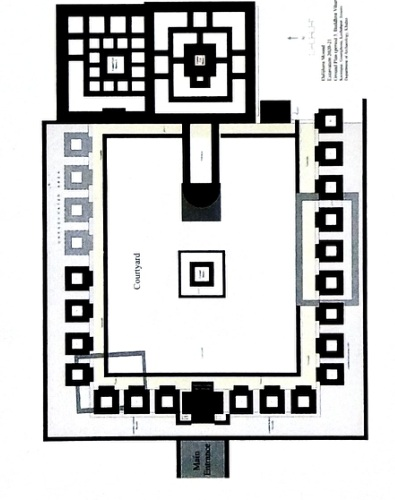

ময়নামতি (দেবপর্বত)
লালমাই-ময়নামতির প্রত্নস্থলগুলোকে আঞ্চলিক ভূগোলে দেখার সহায়ক মানচিত্র।
মানচিত্র · ইতিহাস · প্রত্নস্থল
বিহার ও প্রত্নস্থলগুলোকে শুধু একটি পিন নয়—নদী, প্রাচীন নগর, পার্বত্য এলাকা ও প্রতিবেশী তীর্থক্ষেত্রের সঙ্গে দেখার জন্য তিনটি প্রাসঙ্গিক মানচিত্র সংরক্ষিত হয়েছে। প্রতিটির সঙ্গে মূল BD MAPS পাতার লিংক ও ক্রেডিট আছে।
প্রধান সংযোজন · BD MAPS
বাংলাদেশসহ বিস্তৃত বাংলা ও প্রতিবেশী অঞ্চলের পরিচিত বৌদ্ধ প্রত্নস্থল দেখানো রেফারেন্স মানচিত্র। সোমপুর, মহাস্থান, জগজ্জীবনপুর, সীতাকোট, ভাসু বিহার, রক্তমৃত্তিকা, শালবনসহ নামগুলো আধুনিক জেলা-ডিরেক্টরির সঙ্গে পড়া যায়।
ব্যবহার-নোট: এটি ঐতিহাসিক অবস্থান বোঝার পুরোনো রেফারেন্স ম্যাপ—বর্তমান সীমানা, সড়ক, প্রবেশপথ বা ভ্রমণ-নির্দেশনা নয়। মানচিত্রের মূল নকশা/প্রকাশনার তারিখ BD MAPS পাতায় পৃথকভাবে যাচাই করুন।

আঞ্চলিক প্রসঙ্গ
একই স্থানের ইন্টার্যাকটিভ পিনের পাশাপাশি আশপাশের প্রত্নস্থল ও ভূগোল বোঝাতে এই দুটি মানচিত্র কাজে লাগে।

লালমাই-ময়নামতির প্রত্নস্থলগুলোকে আঞ্চলিক ভূগোলে দেখার সহায়ক মানচিত্র।

প্রাচীন নগর ও আশপাশের প্রত্নতাত্ত্বিক অবস্থান একসঙ্গে বোঝার রেফারেন্স।
নতুন সমৃদ্ধ রেকর্ড · যশোর
UNESCO-র component coordinate: 22°50′26.12″ N, 89°20′27.15″ E (আনুমানিক দশমিক: 22.840589, 89.340875)। এটি সাইটের অবস্থানের সূত্র; জরিপকৃত প্রবেশদ্বারের GPS নয়। ঠিকানা: কাশিমপুর গ্রাম, গৌরিঘোনা, কেশবপুর, যশোর।

উৎস ও দায়
তিনটি BD MAPS ছবি সাইটের স্থানীয় কপি হিসেবে রাখা হয়েছে যাতে বাইরের হটলিংক বা লোড-ব্যর্থতায় পাতা না ভাঙে। মূল পাতার লিংক ও ক্রেডিট অক্ষত আছে। ছবির মালিকানা/লাইসেন্স সম্পর্কিত অধিকার মূল নির্মাতা ও প্রকাশকের; নতুন মানচিত্র হিসেবে কপিরাইট দাবি করা হচ্ছে না। যাত্রার আগে সরকারি তথ্য, স্থানীয় প্রশাসন ও বর্তমান রাস্তার ম্যাপ যাচাই করুন।